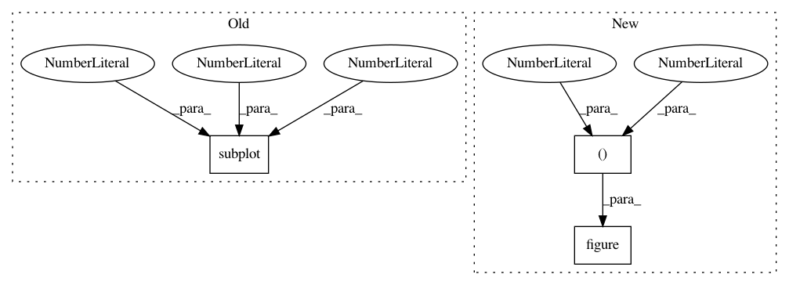

4419f790314fd9ae0c01376a2e45767e10663a4e,tslearn/docs/examples/metrics/plot_lb_keogh.py,,,#,54
Before Change
plt.figure(figsize=(14, 4))
plt.subplot(1, 2, 1)
envelope_down, envelope_up = metrics.lb_envelope(dataset_scaled[0], radius=3)
plt.plot(dataset_scaled[0, :, 0], "r-", label="First time series")
plt.plot(envelope_down[:, 0], "b-", label="Lower envelope")
plt.plot(envelope_up[:, 0], "g-", label="Upper envelope")
After Change
plt.legend()
plt.title("Envelope around a time series with radius=3")
plt.figure(figsize=(14, 8))
plt.plot(envelope_down[:, 0], "b-", label="Lower envelope")
plt.plot(envelope_up[:, 0], "g-", label="Upper envelope")
plt.plot(dataset_scaled[1, :, 0], "k-", label="Second time series")
plt.vlines(numpy.arange(sz), dataset_scaled[1, :, 0], numpy.clip(
In pattern: SUPERPATTERN
Frequency: 5
Non-data size: 3
Instances
Project Name: rtavenar/tslearn
Commit Name: 4419f790314fd9ae0c01376a2e45767e10663a4e
Time: 2020-04-25
Author: romain.tavenard@univ-rennes2.fr
File Name: tslearn/docs/examples/metrics/plot_lb_keogh.py
Class Name:
Method Name:
Project Name: jhfjhfj1/autokeras
Commit Name: 4b83c1070cebd0d996ba2cc69779dcb66d5d0032
Time: 2018-05-29
Author: jhfjhfj1@gmail.com
File Name: experiments/parameters.py
Class Name:
Method Name:
Project Name: keras-team/autokeras
Commit Name: 29207539638be76123e2b9db9fd7cf54ee77c898
Time: 2018-05-25
Author: jin@tamu.edu
File Name: experiments/parameters.py
Class Name:
Method Name: